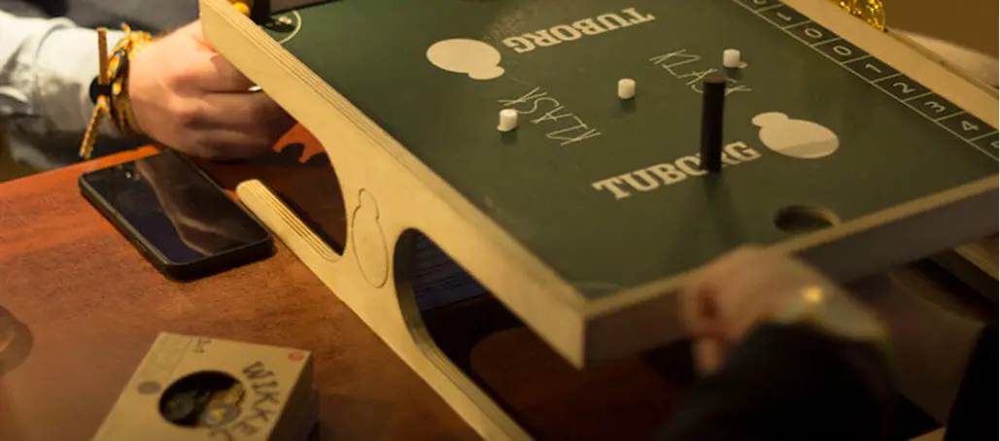

Brætspil
Brætspil hos Pub & Sport
Brætspil skaber hygge og god stemning, og derfor kan du selvfølgelig spille brætspil hos Pub & Sport. Vi tilbyder to sjove spil, der hver især byder på noget særligt: det klassiske backgammon og det moderne og tempofyldte Klask. Uanset om du er til strategi eller action, har vi et spil, der passer til dig og dine venner.
Backgammon
Tag plads med en øl eller kaffe og kast dig ud i et spil backgammon i vores hyggelige omgivelser. Det er en oplagt aktivitet efter arbejde, før en fodboldkamp eller som en rolig pause midt i en bytur. Backgammon er gratis at spille – du skal blot lægge et depositum på 100 kr., når du låner spillet, så det er klar til den næste spiller.
Backgammon regler
Reglerne til backgammon er egentlig ganske simple. Det gælder bare om at tænke lidt taktisk og holde hovedet koldt – især når terningerne ikke lige spiller med. Du spiller på et bræt med 24 trekantede felter – kaldet punkter – som er fordelt i fire kvadranter. Hver spiller har 15 brikker, og målet er at få alle sine brikker rundt på brættet og hjem i sin "hjemmebane" og derefter få dem fjernet fra brættet før modstanderen gør det. Det hele starter med et slag med terningerne – og så er det ellers bare at flytte sine brikker i henhold til øjnene. Du kan flytte én brik med begge terninger eller to brikker hver med én terning. Men pas på! Hvis du lader en brik stå alene, kan modstanderen slå den hjem, og så ryger du tilbage til start. Det er især ærgerligt, hvis du lige var ved at komme hjem. Der er lidt taktik, lidt held – og en god portion skadefryd, når man slår modstanderens brik hjem i sidste øjeblik. Og det er nu også ganske tilfredsstillende at få det perfekte rul, når man mindst venter det.
Klask
Klask er et sjovt og anderledes brætspil, hvor du styrer en magnet under spillepladen og forsøger at score mål med en lille rød bold – uden at ramme de hvide magneter eller miste kontrollen. Det lyder simpelt, men det kræver både timing og præcision. Også her er det gratis at spille, mod et depositum på 100 kr. Læs reglerne og lær spillet at kende her på siden – og glæd dig til masser af grin.
Klask regler
Reglerne til klask er egentlig ganske simple. Spillet styres med magneter, så man skal holde tungen lige i munden for at styre spillet. Du spiller på en bane, som har to dybe huller i hver ende. Disse huller er målene. Inden på midten af banen finder du tre forhindringer: hvide magneter, som man helst ikke vil have tiltrukket sin egen magnet. Man spiller to mod hinanden, og hver spiller har en sort magnet, som man styrer ved at holde på en stor magnet, som findes under spillepladen. Magneten er forbundet med toppen af den sorte magnet på banen. Med sin sorte magnet skal man så skyde den lille røde bold rundt på banen og score i modstanderens mål. Det skal selvfølgelig helst gøres uden om forhindringerne. Men det er nu også ganske morsomt at se modstanderen slæbe rundt på de hvide forhindringer, eller at man taber sin magnet ned i målet. Og det kan hurtigt ske, hvis man bliver for ivrig.